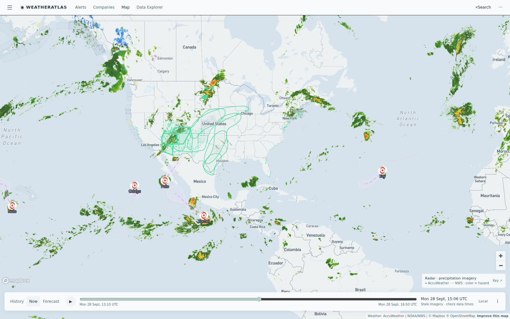

Daily severe-weather intelligence for LNG, refining, offshore, and terminal operators.

Live radar + alerts, 28 Sept ~15:00 UTC. The nor'easter's shield has pulled off the Northeast; a Gale Warning is live on Puget Sound's inland waters; AccuWeather severe-potential flags sit on Midwest sites. Tropical systems (Fay in the Atlantic; Nolo, Odalys, Polo, Rachel in the East Pacific) all remain weak or over open water — no US land threat. Interactive radar + hurricane tracker: accuweather.taborlin.co.
| System | Status | Energy-asset impact |
|---|---|---|
| September nor'easter (East Coast) — exited | CLEARING | New England berths and Delaware River docks move to recovery and cargo-queue clearing through midweek |
| Puget Sound Gale Warning | ACTIVE | Gale Warning live on northern inland waters including the San Juan Islands — marine wind gates on Anacortes-area crude docks; gusts build through this evening |
| Midcon flash-flood flags (KS/OK corridor) | ACTIVE | AccuWeather severe-potential flash-flood flags persist on fertilizer and refinery sites across Kansas and Oklahoma while NWS stays silent at several — rail logistics and containment checks continue |
| TD Fay (Atlantic) / Nolo / Odalys / Polo / Rachel (E Pacific) | OPEN WATER | All weak or over open water — no landfall signal; elevated seas on Baja shipping lanes only; daily track checks continue at statistical season peak |
Gale-onset day is where forecast precision pays: hour-by-hour gust timing at the berth decides whether the last tanker departs tonight or rides out the gale. The per-asset briefs below embed the same-hour AccuWeather enterprise vs free-API comparison, refreshed daily:
Gale Warning live on the refinery's own marine approaches — gusts build through the evening; night marine moves held, dock loading arms secured by dusk.
View live brief →Dry and sunny today — a full ops window — but AccuWeather flash-flood flags persist on the KS/OK corridor and Cushing sits at the north edge of the risk region.
View live brief →Hot Monday with an afternoon-evening thunderstorm window on AccuWeather hourly that the free feed renders near-dry — lightning stand-down timing is tonight's question for tank work.
View live brief →Day 8 of AccuWeather severe-potential flash-flood flags while NWS stays silent — containment checks and rail logistics continue across the corridor.
View live brief →Methodology: Alert and radar data from the AccuWeather enterprise feed and NWS via accuweather.taborlin.co, cross-referenced against a 14,600-asset North American energy facility registry. Forecast-gap comparisons embed same-hour, same-coordinate output from AccuWeather enterprise and free public APIs (OpenMeteo), refreshed daily. Facility names are used for geographic reference only.
Disclaimer: This report is an independent weather-intelligence summary prepared with AccuWeather enterprise data. It is not an official AccuWeather product and carries no warranty. Always follow official NWS/NHC warnings and your internal HSE protocols for operational decisions.